Create (1000words)
My Progress Log
| Week | Key Milestone |
|---|---|
| Week 1 & Week 2 |
|
| Week 3 |
|
| Week 4 & Week 5 |
|
| Week 6 & Week 7 |
|
| Week 8 |
|
| Week 9 |
|
| Week 10 |
|
| Week 11 |
|
| Week 12 |
|
Problem Encountered
Generating a presentable Bar Graph:
Using the code shown I was able to generate the graph shown. However the graph is difficult to understand and analyse. The values of each airport are unorganised making it unpresentable to a user. 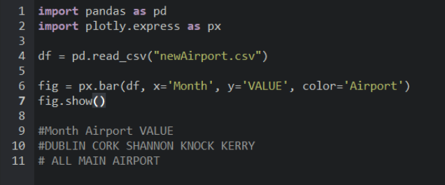 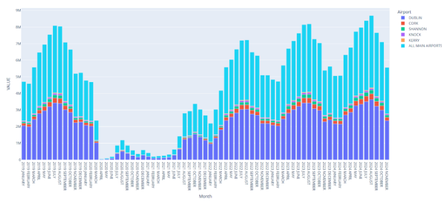
I tried finding different ways to make it so Plotly reads only the values of a certain airport. Below is one of the ways I tried to get Plotly to read the passenger values for Dublin Airport only but this only gave me errors as shown. 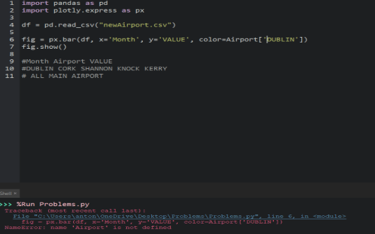
Using the code shown I was able to generate the graph shown. However the graph is difficult to understand and analyse. The values of each airport are unorganised making it unpresentable to a user. 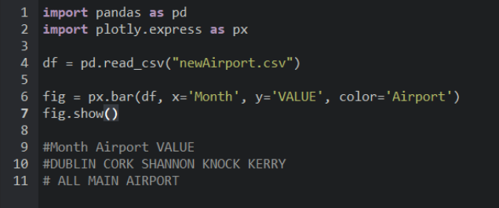 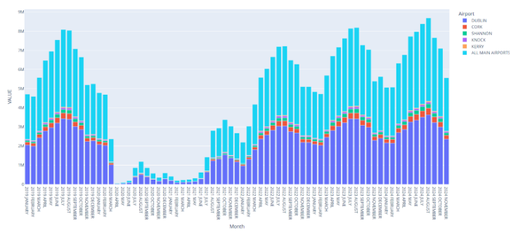
I tried finding different ways to make it so Plotly reads only the values of a certain airport. Below is one of the ways I tried to get Plotly to read the passenger values for Dublin Airport only but this only gave me errors as shown. 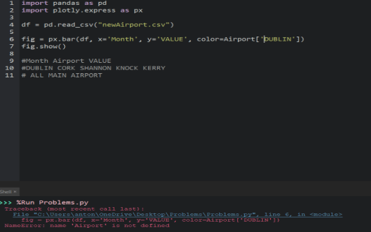
Solution To Problem
I overcame this problem by figuring out that by creating a CSV File containing only the passenger values of one airport, I would be able to generate a suitable graph for analysing and presenting on my website.
I improvised my dataset cleaning code on Python. Using a For Loop I can check every row under the ‘Airport’ column. Inside the loop is a counter to track the row I am on. The if statement checks if the value of the row is equal to the ‘Airport’ values excluding one value which is the Airport you want to keep and save as a CSV File. If the row name is equal to the value, the row is removed from the dataset and the counter is subtracted by 1 to stay on track on the row it is on. The new dataset is then saved into a CSV File. You repeat the code again but change the value in the if statement and the name of the CSV File at the bottom. 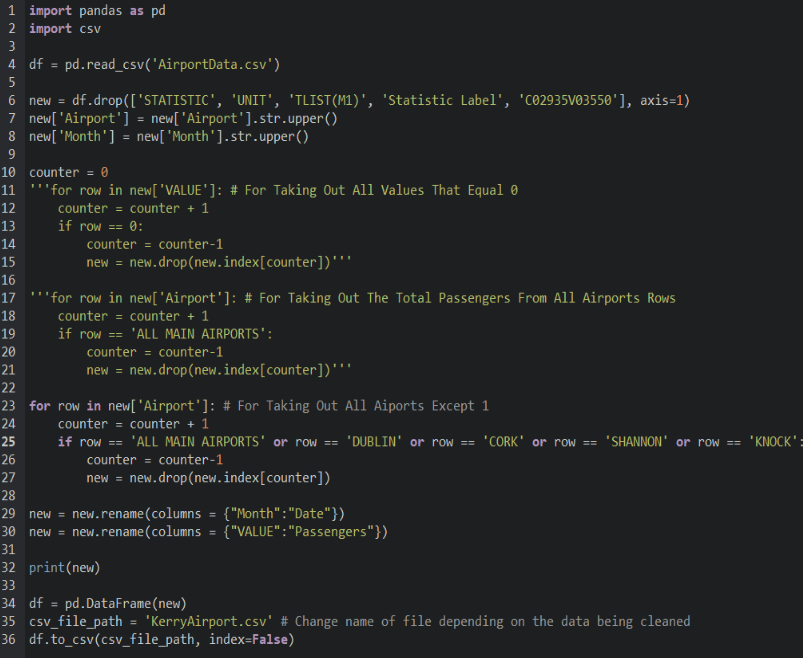
I found that changing the CSV File for each pd.read_csv(‘...’) and the name of the saved HTML File would take up a lot of time. I created a code shown below that uses a For Loop to go through a list containing the airport names. For each loop, the pd.read_csv(‘..’) reads a different airport which allows me to generate and save the Bar Graph for each airport in one click. With the use of f”{}...” I am able to input variables into a string which is the key to getting this code to work successfully. 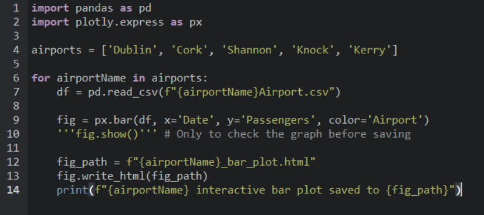
This example of the Bar Graph for Dublin Airport only is more readable for analysing and presentable for the website. 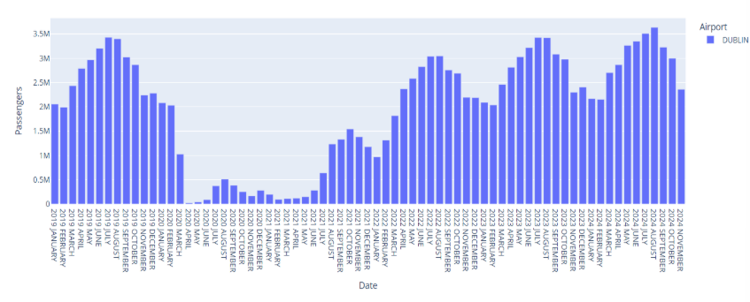
I improvised my dataset cleaning code on Python. Using a For Loop I can check every row under the ‘Airport’ column. Inside the loop is a counter to track the row I am on. The if statement checks if the value of the row is equal to the ‘Airport’ values excluding one value which is the Airport you want to keep and save as a CSV File. If the row name is equal to the value, the row is removed from the dataset and the counter is subtracted by 1 to stay on track on the row it is on. The new dataset is then saved into a CSV File. You repeat the code again but change the value in the if statement and the name of the CSV File at the bottom. 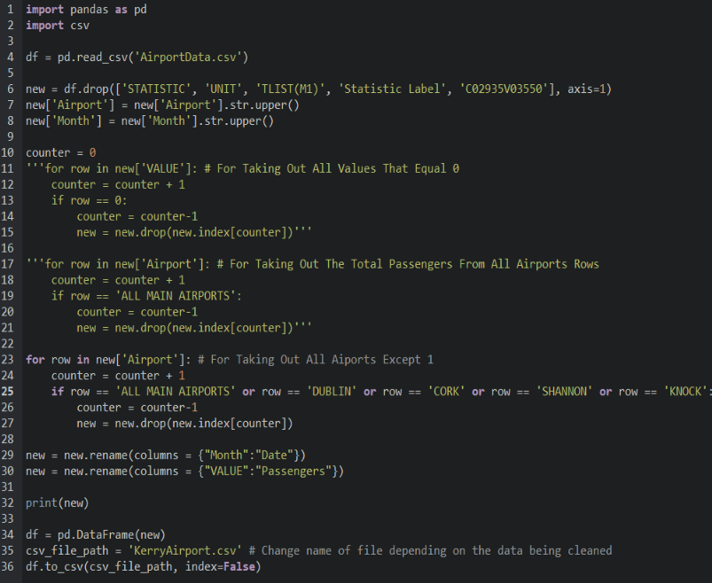
I found that changing the CSV File for each pd.read_csv(‘...’) and the name of the saved HTML File would take up a lot of time. I created a code shown below that uses a For Loop to go through a list containing the airport names. For each loop, the pd.read_csv(‘..’) reads a different airport which allows me to generate and save the Bar Graph for each airport in one click. With the use of f”{}...” I am able to input variables into a string which is the key to getting this code to work successfully. 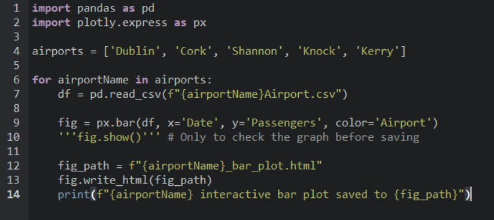
This example of the Bar Graph for Dublin Airport only is more readable for analysing and presentable for the website. 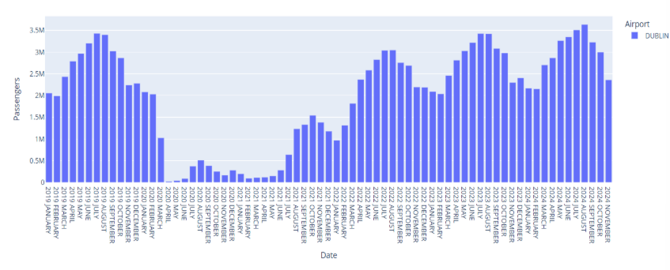
Algorithms Used For Analytics
The algorithms I created calculate the statistics from each dataset and store it into a dictionary efficiently.
Peak Value: The peak_value function finds the maximum number of passengers.
It reads the CSV file of the dataset and a variable for the peak value is set at 0. A For Loop checks all values in the ‘Passengers’ column and if the value is bigger than the peak variable, the peak variable turns into the value.
Minimum Value: The minimum_value function finds the minimum number of passengers.
It reads the CSV file of the dataset and a variable for the minimum value is set at an extremely large value. A For Loop checks all values in the ‘Passengers’ column and if the value is smaller than the minimum variable, the minimum variable turns into the value.
Mean: The mean_calculator function calculates the average number of passengers.
It reads the CSV file of the dataset and variables for total and counter are set at 0. A For Loop checks all values in the ‘Passengers’ column and adds all the values together using the total variable. In each loop, the counter is increasing by 1 to find the length of the column. After the For Loop, the mean variable divides total by counter, the mean is rounded as a whole number.
Median: The median_finder function calculates the median number of passengers.
It starts by storing all the values in a list. The list is then sorted using the sorted() function and a variable is created that contains the length of the list using the len() function. The if statement checks if the length of the list is Even or Odd. If length is Even then there are 2 medians, the two medians are located using indexing. They are added together, divided by 2 and rounded to a whole number. If length is Odd then the median is found by dividing the list length by 2 inside the index as shown.
Peak Value: The peak_value function finds the maximum number of passengers.
It reads the CSV file of the dataset and a variable for the peak value is set at 0. A For Loop checks all values in the ‘Passengers’ column and if the value is bigger than the peak variable, the peak variable turns into the value.
Minimum Value: The minimum_value function finds the minimum number of passengers.
It reads the CSV file of the dataset and a variable for the minimum value is set at an extremely large value. A For Loop checks all values in the ‘Passengers’ column and if the value is smaller than the minimum variable, the minimum variable turns into the value.
Mean: The mean_calculator function calculates the average number of passengers.
It reads the CSV file of the dataset and variables for total and counter are set at 0. A For Loop checks all values in the ‘Passengers’ column and adds all the values together using the total variable. In each loop, the counter is increasing by 1 to find the length of the column. After the For Loop, the mean variable divides total by counter, the mean is rounded as a whole number.
Median: The median_finder function calculates the median number of passengers.
It starts by storing all the values in a list. The list is then sorted using the sorted() function and a variable is created that contains the length of the list using the len() function. The if statement checks if the length of the list is Even or Odd. If length is Even then there are 2 medians, the two medians are located using indexing. They are added together, divided by 2 and rounded to a whole number. If length is Odd then the median is found by dividing the list length by 2 inside the index as shown.
Algorithms Pseudocode
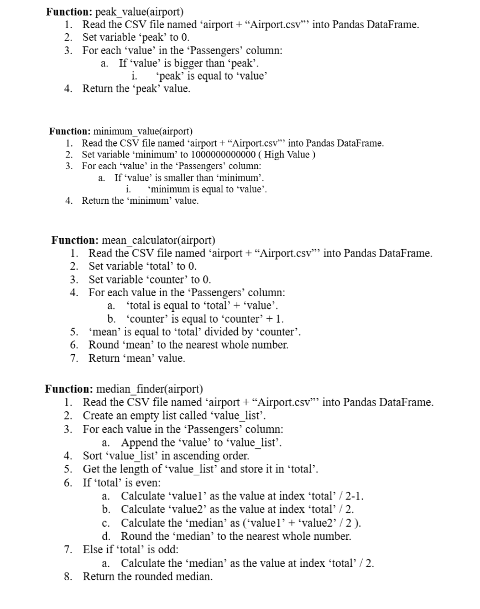